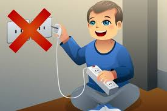
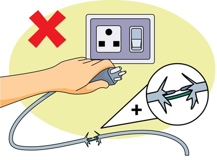
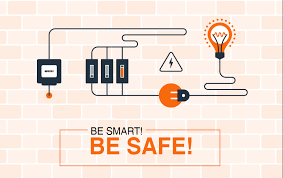

Safety Tips
Learn about safety precautions when working with electrical wiring
- Turn off Power Before Working:
- Always turn off the power at the circuit breaker or fuse box before working on any electrical wiring or devices. This prevents the risk of electric shock or short circuits.
- Use a voltage tester or multimeter to verify that the power is off before touching any wires or components.

- Use Appropriate Safety Gear:
- Wear appropriate personal protective equipment (PPE) such as insulated gloves, safety goggles, and non-conductive footwear when working with electrical wiring.
- Use insulated tools to avoid accidental contact with live wires.
- Test Wires Before Handling:
- Before touching or handling wires, use a voltage tester or multimeter to check for the presence of voltage. Even if you've turned off the power, it's crucial to verify that wires are not energized.
- Test both the wires and any nearby metal junction boxes or fixtures to ensure they are not carrying current.

- Inspect Wiring and Equipment:
- Inspect electrical wiring, cords, and equipment for any signs of damage, wear, or deterioration before starting work. Replace damaged or frayed wires immediately.
- Ensure that electrical connections are secure and not loose, which could lead to overheating or electrical arcing.
- Avoid Overloading Circuits:
- Do not overload electrical circuits by connecting too many devices or appliances to a single outlet or circuit. Distribute electrical loads evenly across multiple circuits if needed.
- Use circuit breakers that match the current rating of the wires and appliances to prevent overheating and potential fire hazards.
- Work in Dry Conditions:
- Ensure that the work area is dry before starting electrical work. Water and moisture increase the risk of electrical shock.
- If working outdoors or in damp conditions, use weatherproof extension cords and outlets with ground fault circuit interrupters (GFCIs).
- Follow Electrical Codes and Standards:
- Adhere to local electrical codes and regulations when installing or modifying electrical wiring. Codes are designed to ensure safety and proper installation practices.
